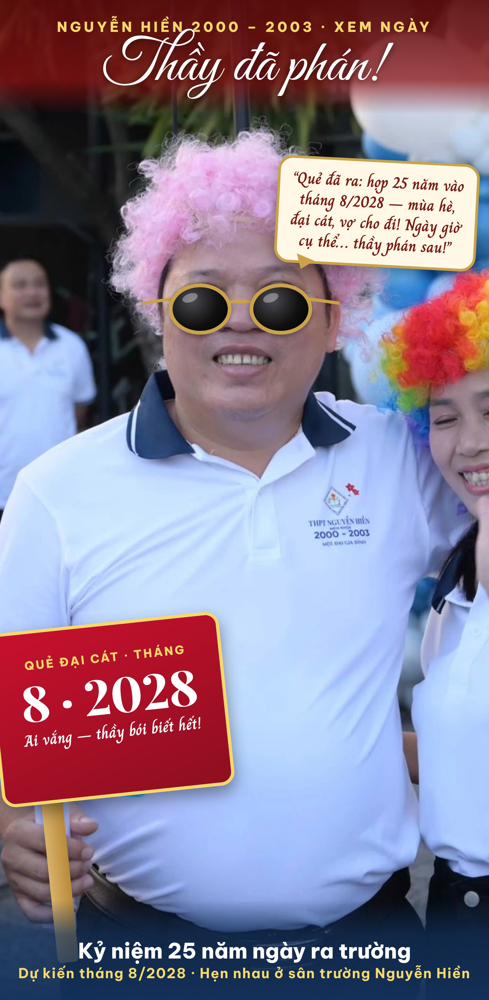

<!doctype html><html lang="vi"><head><meta charset="utf-8">
<title>Kịch bản kỷ niệm 25 năm ngày ra trường · Nguyễn Hiền 2000 - 2003</title>
<!-- PDF "hộp quà bí mật": trang bìa 9 hộp quà → chạm mở từng điều mới lạ (liên kết nội bộ PDF), mỗi trang có nút quay lại.
     Khổ 9:16 (540×960 px) cho điện thoại. node render.js → kich-ban-ky-niem-25-nam-ngay-ra-truong.pdf -->
<link href="https://fonts.googleapis.com/css2?family=Great+Vibes&family=Be+Vietnam+Pro:wght@400;500;600;700;800&family=Charm:wght@400;700&family=Playfair+Display:wght@700;800&display=swap" rel="stylesheet">
<style>
@page{size:540px 960px;margin:0}
*{margin:0;box-sizing:border-box}
body{font-family:'Be Vietnam Pro',sans-serif;color:#2B2420;-webkit-print-color-adjust:exact;print-color-adjust:exact}
a{color:inherit;text-decoration:none}
.tr{width:540px;height:960px;position:relative;overflow:hidden;page-break-after:always;background:radial-gradient(ellipse at 50% 30%,#FFF9EE 0,#FBEFD9 60%,#F1DBB9 100%);padding:44px 38px 40px}
.tr:last-child{page-break-after:auto}
.vien{position:absolute;inset:12px;border:2px solid rgba(201,162,74,.75);border-radius:16px;pointer-events:none}
.canh{position:absolute;pointer-events:none;width:300px}
.c1{left:-50px;top:-50px;transform:rotate(-8deg)}.c2{right:-80px;bottom:-80px;transform:rotate(172deg);width:200px}
.dieu .c1,.lich .c1,.ss .c1{width:170px;left:-72px;top:-62px}.dieu .c2,.lich .c2,.ss .c2{display:none}
.bia .nho{bottom:30px;padding:0 60px}
.so{font-family:'Playfair Display',serif;font-variant-numeric:lining-nums}
.ey{font:800 13px 'Be Vietnam Pro';letter-spacing:.2em;color:#A3221A;text-align:center}
.gv{font-family:'Great Vibes',cursive;color:#A3221A;font-weight:400}
.ch{font-family:'Charm',cursive}
/* ---- bìa ---- */
.bia{display:flex;flex-direction:column;align-items:center;text-align:center;padding-top:70px}
.bia .logo{width:84px;height:84px;object-fit:contain;position:relative}
.bia .ey{margin-top:14px}
.bia h1{font-size:62px;line-height:1.05;margin:10px 0 0}
.bia .s25{font:800 150px/1 'Playfair Display',serif;font-variant-numeric:lining-nums;color:#14325C;margin-top:4px;position:relative}
.bia .s25 small{display:block;font:700 18px 'Be Vietnam Pro';letter-spacing:.3em;color:#A3221A;margin-top:4px}
.bia .nam{font:700 20px 'Be Vietnam Pro';color:#14325C;margin-top:14px}
.bia .cau{font-size:22px;color:#6B4A2E;margin-top:22px;line-height:1.5}
.cham{margin-top:30px;display:inline-block;background:#A3221A;color:#fff;font:800 20px 'Be Vietnam Pro';padding:16px 30px;border-radius:40px;box-shadow:0 10px 24px rgba(163,34,26,.35)}
.cham small{display:block;font:500 13px 'Be Vietnam Pro';opacity:.9;margin-top:3px}
.nho{position:absolute;left:0;right:0;bottom:46px;text-align:center;font:500 13px 'Be Vietnam Pro';color:#7A6A5A}
/* ---- luật chơi ---- */
.luat{display:flex;flex-direction:column;align-items:center;text-align:center;justify-content:center}
.luat .to{font-size:96px;line-height:1}
.luat h2{font-size:56px;margin:8px 0 14px}
.luat p{font-size:21px;line-height:1.6;color:#4A3A2E;max-width:420px}
.luat p b{color:#A3221A}
/* ---- 9 hộp quà ---- */
.hop h2{font-size:54px;text-align:center;margin-top:2px}
.hop .ey{margin-top:22px}
.hop .goi{text-align:center;font:500 15px 'Be Vietnam Pro';color:#6B5A48;margin:2px 0 18px}
.luoi{display:grid;grid-template-columns:repeat(3,1fr);gap:16px;position:relative}
.qua{display:flex;flex-direction:column;align-items:center;justify-content:center;height:190px;border-radius:18px;background:linear-gradient(160deg,#C8102E,#8E0F1F);color:#fff;position:relative;box-shadow:0 10px 22px rgba(120,20,20,.3);overflow:hidden}
.qua::before{content:'';position:absolute;left:50%;top:0;bottom:0;width:16px;margin-left:-8px;background:linear-gradient(90deg,#E9C766,#C9A24A)}
.qua::after{content:'';position:absolute;top:50%;left:0;right:0;height:16px;margin-top:-8px;background:linear-gradient(180deg,#E9C766,#C9A24A)}
.qua .no{position:relative;z-index:1;width:64px;height:64px;border-radius:50%;background:#FFF6E2;color:#A3221A;display:grid;place-items:center;font:800 30px 'Playfair Display',serif;font-variant-numeric:lining-nums;box-shadow:0 0 0 4px #C9A24A}
.qua .ten{position:relative;z-index:1;margin-top:10px;font:700 13px 'Be Vietnam Pro';background:rgba(0,0,0,.35);padding:3px 10px;border-radius:12px}
.qua.v{background:linear-gradient(160deg,#1F7A6B,#0E4F45)}
.qua.x{background:linear-gradient(160deg,#14325C,#0B1E3A)}
.hop .mo{margin-top:22px;text-align:center;font:700 16px 'Be Vietnam Pro';color:#14325C}
.hop .mo a{display:inline-block;border:2px solid #14325C;border-radius:30px;padding:10px 22px;margin:0 4px}
/* ---- trang một điều ---- */
.dieu .the{display:inline-block;font:800 12px 'Be Vietnam Pro';letter-spacing:.18em;color:#fff;background:#A3221A;padding:5px 12px;border-radius:20px}
.dieu .dau{text-align:center;position:relative}
.dieu .to{font-size:84px;line-height:1;margin-top:14px}
.dieu h2{font-size:52px;line-height:1.05;margin:6px 0 4px}
.dieu .phu{font-size:20px;color:#6B4A2E}
.khac{margin:22px 0 16px;background:#14325C;color:#fff;border-radius:16px;padding:14px 18px;position:relative}
.khac b{display:block;font:800 12px 'Be Vietnam Pro';letter-spacing:.16em;color:#F2C861;margin-bottom:4px}
.khac p{font:500 16px/1.5 'Be Vietnam Pro'}
.buoc{list-style:none;padding:0;position:relative}
.buoc li{display:flex;gap:12px;margin-top:11px;font:400 16px/1.5 'Be Vietnam Pro'}
.buoc li i{flex:0 0 28px;height:28px;border-radius:50%;background:#C9A24A;color:#fff;display:grid;place-items:center;font:800 14px 'Be Vietnam Pro';font-style:normal;margin-top:1px}
.buoc li b{color:#A3221A}
.loi{margin-top:16px;font-size:20px;color:#6B4A2E;text-align:center;line-height:1.45}
.dieu .chan{position:absolute;left:38px;right:38px;bottom:40px;display:flex;justify-content:space-between;gap:10px}
.dieu .chan a{flex:1;text-align:center;font:700 15px 'Be Vietnam Pro';padding:12px 8px;border-radius:30px;border:2px solid #A3221A;color:#A3221A;background:#FFF9EE}
.dieu .chan a.tiep{background:#A3221A;color:#fff}
/* ---- lịch một ngày ---- */
.lich h2{font-size:50px;text-align:center;margin-top:4px}
.lich .goi{text-align:center;font:500 15px 'Be Vietnam Pro';color:#6B5A48;margin-bottom:12px}
.dong{display:flex;gap:12px;align-items:flex-start;padding:7px 0;border-bottom:1px dashed rgba(163,34,26,.25);position:relative}
.dong .g{flex:0 0 58px;font:800 17px 'Playfair Display',serif;font-variant-numeric:lining-nums;color:#A3221A}
.dong .n{font:500 15px/1.4 'Be Vietnam Pro'}.dong .n small{display:block;color:#7A6A5A;font-size:12.5px}
.buoi{margin:12px 0 2px;font:800 12px 'Be Vietnam Pro';letter-spacing:.2em;color:#fff;background:#1F7A6B;display:inline-block;padding:4px 12px;border-radius:14px}
.buoi.t{background:#14325C}
/* ---- so sánh ---- */
.ss table{width:100%;border-collapse:separate;border-spacing:0;margin-top:14px;font-size:14.5px;position:relative}
.ss th{font:800 13px 'Be Vietnam Pro';letter-spacing:.1em;padding:10px 8px;color:#fff;background:#A3221A}
.ss th:first-child{background:#7A6A5A;border-radius:12px 0 0 0}.ss th:last-child{background:#1F7A6B;border-radius:0 12px 0 0}
.ss td{padding:9px 8px;vertical-align:top;line-height:1.4;background:rgba(255,255,255,.75);border-bottom:1px solid #EAD9BE}
.ss td:first-child{color:#6B5A48}.ss td:last-child{font-weight:600;color:#14325C}
.ss h2{font-size:48px;text-align:center}
.lam{margin-top:18px;background:#FFF;border:2px solid #C9A24A;border-radius:16px;padding:14px 16px;position:relative}
.lam b{display:block;font:800 13px 'Be Vietnam Pro';letter-spacing:.14em;color:#A3221A;margin-bottom:6px}
.lam li{font:500 14.5px/1.5 'Be Vietnam Pro';margin-left:18px}
.phan{padding:0;background:#14325C}.phan img{position:absolute;left:50%;top:0;height:862px;width:auto;transform:translateX(-50%)}.phan .cham{position:absolute;left:50%;bottom:22px;transform:translateX(-50%);margin:0;white-space:nowrap;border:3px solid #F6D86B}
.ket{text-align:center;margin-top:16px;font-size:30px;position:relative}
</style></head><body><div id="goc"></div>
<script>
const LOGO='../../assets/logo-nguyen-hien.png',CANH='../tho-mot-thoi-de-nho/canh-phuong.webp';
const trang=(id,cls,nd,canh=true)=>`<section class="tr ${cls}" id="${id}"><div class="vien"></div>${canh?``:''}${nd}</section>`;
/* 9 điều mới lạ: [emoji, tên ngắn trên hộp, tiêu đề, câu phụ, khác Gala 2026, các bước, lời kết, màu hộp] */
const D=[
['✉️','Thư niêm phong','Thư gửi 2028','Lá thư viết hôm nay – mở ra sau 2 năm',
 'Gala 2026 viết lưu bút cho hiện tại. Lần này mỗi người viết cho chính mình của 2028 – không ai được đọc trước.',
 ['Từ nay tới 2027, mỗi bạn viết <b>“Thư gửi 2028”</b> trên kỷ yếu online – thư được <b>khoá lại</b>, ngày mở do BTC hẹn.','Trong thư: điều mình mong, một bí mật nhỏ, một lời nhắn cho bạn cùng bàn.','Đêm kỷ niệm, thư <b>tự mở trên màn hình lớn</b> – MC chọn ngẫu nhiên đọc to (ẩn tên nếu người viết muốn).','Ai vắng mặt vẫn nhận được thư của mình qua web.'],
 'Hai năm chờ một lá thư – đó là lý do để quay về.',''],
['🔔','Trống trường','Một buổi sáng đi học lại','Áo trắng · trống trường · chào cờ',
 'Gala 2026 gặp ở nhà hàng. Lần này buổi sáng về hẳn trường, sống lại đúng một buổi học.',
 ['<b>7:30</b> trống trường vang – cả khoá xếp hàng theo lớp dưới cột cờ, <b>chào cờ</b>.','Mỗi lớp vào đúng <b>phòng học cũ</b>, ngồi lại chỗ cũ theo sơ đồ lớp trên web.','Thầy cô chủ nhiệm điểm danh bằng <b>sổ đầu bài</b> và dạy <b>“tiết sinh hoạt lớp” 20 phút</b>.','Ai đi trễ… đứng ngoài cửa hát một bài! 😄'],
 'Lần cuối cùng chúng ta được gọi là “học sinh”.','v'],
['🌳','Gieo một cây','Cây phượng 25 năm','Một dấu ấn ở lại sân trường',
 'Gala 2026 tặng hoa, tặng quỹ. Lần này cả khoá để lại một cây phượng sống cùng trường.',
 ['Cả khoá tặng trường <b>một cây phượng</b>, trồng ở góc sân do nhà trường chọn.','Biển đá nhỏ: <i>“Khoá 2000 – 2003 · 25 năm trở về”</i> + <b>mã QR</b> dẫn về kỷ yếu online.','Mỗi lớp góp <b>một xẻng đất</b>, thầy cô tưới gốc đầu tiên.','Mỗi năm, ai về thăm trường chụp một tấm cạnh cây – xem cây lớn cùng mình.'],
 'Hoa phượng năm ấy tiễn mình đi – cây phượng này đón mình về.','v'],
['📸','Chụp lại','Ngày ấy – Bây giờ','Chụp lại đúng tấm ảnh 25 năm trước',
 'Gala 2026 chụp ảnh mới. Lần này mỗi lớp tìm lại một ảnh xưa và đứng lại y như cũ.',
 ['Mỗi lớp chọn <b>1 – 3 ảnh xưa</b> (ảnh lớp, ảnh cắm trại, ảnh tốt nghiệp).','Tới trường, đứng <b>đúng vị trí, đúng tư thế</b> – thợ ảnh chụp lại cùng góc máy.','Ai vắng: một bạn cầm <b>tấm ảnh chân dung</b> của bạn ấy đứng vào chỗ.','Đêm đó chiếu <b>so sánh trượt</b> “Ngày ấy – Bây giờ” – web đã có sẵn tính năng này.'],
 'Tóc có thể thưa, dáng có thể khác – nhưng chỗ đứng vẫn là của mình.',''],
['👨‍👩‍👧','Thế hệ F2','Con mình về trường bố mẹ','Lần đầu đưa con đi họp lớp',
 'Gala 2026 chỉ có thầy cô và bạn bè. Lần này mở cửa cho con cái – thế hệ thứ hai của khoá.',
 ['Buổi sáng các bé đi cùng: <b>“Hành trình tìm lớp của bố mẹ”</b> – tìm phòng học, tìm tên bố mẹ trong danh sách cũ.','Góc vẽ <b>“Trường của bố mẹ tôi”</b> – tranh đẹp được in vào kỷ yếu.','Các bé viết <b>lưu bút gửi bố mẹ</b> – chiếu xen trong đêm.','Trao <b>học bổng khuyến học</b> cho học sinh Nguyễn Hiền hiện tại – các em đến dự cùng.'],
 'Chúng ta từng là học trò ở đây – nay mình dắt học trò nhỏ của mình về.',''],
['📦','Hộp thời gian','Hộp thời gian 12 lớp','Trưng bày kỷ vật – và chôn một hộp mới',
 'Gala 2026 nhìn lại qua ảnh. Lần này cầm tận tay kỷ vật thật của tuổi 18.',
 ['Mỗi lớp gom <b>kỷ vật 2000 – 2003</b>: thẻ học sinh, sổ lưu bút, áo đồng phục, giấy khen, băng cát-sét…','Góc <b>triển lãm 12 lớp</b> ở sảnh đón khách – mỗi món có thẻ ghi câu chuyện.','Cuối đêm, mỗi lớp bỏ <b>1 món + 1 lá thư</b> vào <b>hộp thời gian mới</b>.','Hộp được niêm phong, <b>mở vào mốc 30 năm (2033)</b>.'],
 'Năm 2033, chính chúng ta sẽ mở chiếc hộp này.','x'],
['🎬','Công chiếu','Phim “Một thời để nhớ”','Phim tài liệu 20 phút của chính khoá mình',
 'Gala 2026 chiếu ảnh và clip rời. Lần này có một bộ phim trọn vẹn, công chiếu như rạp.',
 ['Từ nay gom <b>ảnh xưa, clip Gala 2026, lời kể</b> của thầy cô và bạn bè.','Phỏng vấn ngắn mỗi lớp 1 phút: <i>“25 năm qua, điều gì không đổi?”</i>','<b>Công chiếu ra mắt</b> mở màn đêm kỷ niệm – thảm đỏ, vé mời có tên từng người.','Phim đưa lên kỷ yếu online, ai cũng giữ được.'],
 'Có những ký ức chỉ cần 20 phút để sống lại 25 năm.','x'],
['🎲','Ghế bí mật','Bàn tiệc bốc thăm','Không ngồi theo lớp – ngồi theo duyên',
 'Gala 2026 ngồi theo lớp. Lần này mỗi bàn là một “lớp mới” gồm bạn của cả 12 lớp.',
 ['Đón khách, mỗi người <b>bốc một lá thăm</b> – tên bàn là tên một <b>thầy cô</b> hoặc <b>một bài hát năm 2001</b>.','Mỗi bàn có <b>thẻ câu hỏi làm quen</b>: “Bạn từng trốn tiết ở đâu?”…','Sau món chính được <b>đổi về bàn lớp mình</b> – nhưng ai cũng đã có thêm bạn mới.','Bàn nào đoán đúng nhiều nhất <b>“ai là ai năm 2003”</b> nhận quà.'],
 'Ba năm cùng trường mà chưa từng nói chuyện – hôm nay là dịp.',''],
['🎤','Hát lại tuổi 18','Đêm “Hát lại tuổi 18”','Không tập văn nghệ – ai cũng là ca sĩ',
 'Gala 2026 mỗi lớp một tiết mục tập dượt. Lần này là karaoke ban nhạc sống, nhạc hit những năm 2000 – 2003.',
 ['Mỗi lớp <b>bốc thăm một bài hit</b> thời đi học – cả lớp lên hát, sai lời càng vui.','Màn hình chạy <b>lời karaoke + ảnh lớp</b> đang hát.','Cuối đêm: <b>quẩy EDM</b> với 3 bài của khoá (đã có từ Gala 2026).','Khán giả bình chọn <b>“Lớp hát dở nhất mà vui nhất”</b>.'],
 'Giọng có thể không còn trong – nhưng lời bài hát thì chưa quên.','v']];
let h='';
/* 1. Bìa */
h+=trang('bia','bia',`<div class="ey">TRƯỜNG THPT NGUYỄN HIỀN · ĐÀ NẴNG</div>
<h1 class="gv">Kịch bản kỷ niệm</h1><div class="s25">25<small>NĂM NGÀY RA TRƯỜNG</small></div><div class="nam">Niên khoá 2000 – 2003 · Tháng 8/2028</div>
<div class="cau ch">Gala 2026 mình đã trở về.<br>Lần tới… sẽ khác lắm đấy!</div>
<a class="cham" href="#phan">👆 Chạm để bắt đầu<small>có 9 hộp quà bí mật bên trong</small></a>
<div class="nho">Bản ý tưởng của Ban liên lạc · mời cả khoá góp ý</div>`);
/* 1b. Thầy bói chọn ngày */
h+=`<section class="tr phan" id="phan"><a class="cham" href="#luat">🎁 Tháng đã chốt – mở hộp quà</a></section>`;
/* 2. Luật chơi */
h+=trang('luat','luat',`<div class="to">🎁</div><h2 class="gv">Luật chơi</h2>
<p>Trang sau có <b>9 hộp quà</b>. Mỗi hộp là <b>một điều chưa từng có</b> ở Gala 2026.</p><p style="margin-top:14px"><b>Đừng cuộn!</b> Hãy <b>chạm vào từng hộp</b> để mở – mở xong bấm “Về hộp quà” để chọn hộp khác.</p>
<p style="margin-top:14px">Mở hết 9 hộp sẽ thấy <b>kịch bản trọn một ngày</b> năm 2028.</p>
<a class="cham" href="#hop">🎁 Tới chỗ hộp quà</a>`);
/* 3. Hộp quà */
h+=trang('hop','hop',`<div class="ey">CHẠM VÀO MỘT HỘP</div><h2 class="gv">9 điều mới lạ</h2><div class="goi">Mỗi hộp một bất ngờ · mở theo thứ tự nào cũng được</div>
<div class="luoi">${D.map((d,i)=>`<a class="qua ${d[7]}" href="#d${i+1}"><span class="no">${i+1}</span><span class="ten">${d[1]}</span></a>`).join('')}</div>
<div class="mo"><a href="#lich">🗓️ Xem cả ngày 2028</a><a href="#ss">⚖️ So với 2026</a></div>`,false);
/* 4. 9 trang điều */
D.forEach((d,i)=>{h+=trang('d'+(i+1),'dieu',`<div class="dau"><span class="the">HỘP QUÀ SỐ ${i+1} / 9</span><div class="to">${d[0]}</div><h2 class="gv">${d[2]}</h2><div class="phu ch">${d[3]}</div></div>
<div class="khac"><b>KHÁC GALA 2026 Ở CHỖ</b><p>${d[4]}</p></div>
<ul class="buoc">${d[5].map((b,k)=>`<li><i>${k+1}</i><span>${b}</span></li>`).join('')}</ul>
<div class="loi ch">“${d[6]}”</div>
<div class="chan"><a href="#hop">🎁 Về hộp quà</a><a class="tiep" href="${i<8?'#d'+(i+2):'#lich'}">${i<8?'Mở hộp '+(i+2)+' →':'Xem cả ngày →'}</a></div>`)});
/* 5. Lịch một ngày */
const L=[['s','BUỔI SÁNG · TẠI TRƯỜNG'],['07:30','Trống trường – tập trung dưới cột cờ','Nhận “thẻ học sinh 2028” có ảnh ngày ấy'],['08:00','Chào cờ · điểm danh','Hộp 2'],['08:20','Tiết sinh hoạt lớp ở phòng học cũ','Thầy cô chủ nhiệm · ngồi đúng chỗ cũ'],['09:00','Trồng cây phượng 25 năm','Hộp 3'],['09:30','Chụp lại “Ngày ấy – Bây giờ”','Hộp 4 · các bé đi “tìm lớp của bố mẹ” (hộp 5)'],['10:30','Trao học bổng khuyến học','Học sinh Nguyễn Hiền hiện tại cùng dự'],['t','BUỔI TỐI · ĐÊM KỶ NIỆM'],['17:00','Đón khách · triển lãm kỷ vật 12 lớp','Bốc thăm ghế bí mật (hộp 6, 8)'],['18:00','Công chiếu phim “Một thời để nhớ”','Hộp 7'],['18:30','Mở “Thư gửi 2028”','Hộp 1'],['19:00','Tiệc · bàn bốc thăm → về bàn lớp',''],['19:45','Đêm “Hát lại tuổi 18” + quẩy EDM','Hộp 9'],['21:00','Niêm phong hộp thời gian – hẹn 2033','Chụp ảnh toàn khoá']];
h+=trang('lich','lich',`<div class="ey">KỊCH BẢN TRỌN MỘT NGÀY</div><h2 class="gv">Ngày trở về 2028</h2><div class="goi">Dự kiến tháng 8/2028 · nghỉ hè, trường vắng · BTC chốt ngày sau</div>
${L.map(x=>x[0]==='s'||x[0]==='t'?`<div class="buoi ${x[0]==='t'?'t':''}">${x[1]}</div>`:`<div class="dong"><span class="g">${x[0]}</span><span class="n">${x[1]}${x[2]?`<small>${x[2]}</small>`:''}</span></div>`).join('')}
<div class="dieu"><div class="chan"><a href="#hop">🎁 Về hộp quà</a><a class="tiep" href="#ss">So với 2026 →</a></div></div>`);
/* 6. So sánh + việc làm ngay */
const S=[['Gặp ở nhà hàng','Sáng về trường, tối đêm kỷ niệm'],['Viết lưu bút tại chỗ','Mở thư đã viết từ 2 năm trước'],['Tặng hoa, tặng quỹ','Để lại một cây phượng'],['Chụp ảnh mới','Chụp lại đúng ảnh xưa'],['Chỉ thầy cô và bạn bè','Có thêm con cái và học sinh hiện tại'],['Ngồi theo lớp','Bốc thăm ghế, quen bạn lớp khác'],['Văn nghệ tập dượt','Karaoke hit 2000 – 2003 + EDM'],['Chiếu ảnh, clip rời','Công chiếu phim tài liệu của khoá']];
h+=trang('ss','ss',`<div class="ey">VÌ SAO LẦN NÀY KHÁC</div><h2 class="gv">2026 → 2028</h2>
<table><tr><th>GALA 2026</th><th>KỶ NIỆM 25 NĂM</th></tr>${S.map(r=>`<tr><td>${r[0]}</td><td>${r[1]}</td></tr>`).join('')}</table>
<div class="lam"><b>VIỆC LÀM NGAY TỪ BÂY GIỜ</b><ul><li>Viết “Thư gửi 2028” trên kỷ yếu online</li><li>Mỗi lớp gom ảnh xưa + kỷ vật thời đi học</li><li>Gửi clip, lời kể để làm phim</li><li>Góp ý: bạn thích hộp quà số mấy nhất?</li></ul></div>
<div class="ket gv">Hẹn gặp lại dưới gốc phượng · tháng 8/2028</div>
<div class="dieu"><div class="chan"><a href="#hop">🎁 Về hộp quà</a><a class="tiep" href="#bia">↺ Về trang đầu</a></div></div>`);
document.getElementById('goc').outerHTML=h;
</script></body></html>
